2019
-
Food Generation From Ingredients and Cooking Method
2019 Fall
We proposed a deep learning approach that generates images of food provided ingredients and the cooking method as input. In the implementation, we exploited StackGAN as basic architecture. Inspired by paper The Art of Food, we introduced the cooking method as a crucial feature and input to generate reasonable food image in a specific class. We refined the problem of food image classification and generation along with providing our solution for generation in this project.
2018
-
VR Acquisition & Application Development for School of Engineering Research
2018 Spring - 2018 Fall
This research investugated Photogrammetry technology for 3D reconstruction, as part of the new virtual and augmented reality lab for the School of Engineering. We researched in method to raise the quality of Photogrammetry-generated 3D environments to make them as believable as possible, using large image datadets. We also identified common issues to develop best-practices guidelines for image acquisition in both indoor and outdoor environments, using combinations of off-the-shelf tools. One of our hypothesis is quality of work Photogrammetry generates can become reality-like if the size of image-data set is approaching to infinity. The main methodology of this research is gathering documentation from various professionals in all steps of pipeline and then analyze, select and implement in our own data set.
- 2018 Fall: Grand Opening of The Rensselear Augmented and Virtual Environment lab (RAVE)
- 2018 Summer: We designed a program named 3D-Stitching to fill holes between two models, deal with mesh overlaps in between, and calculate geometry along with texture in large blank which has repeated details in real-world. We also investigated issue with non-planar ground surfaces to allow virtual objects to realistically interact with the generated environments.
- 2018 Spring: We successfully captured several scenes from around the JEC building and published them in the SteamVR Workshop to allow anyone with a VR system to experience.
2017
Google Cardboard VR/AR
2017 Fall
In this research, we investigated method to implement VR/AR on website and created 360 environment with basic hardware available. In order to achieve our final goal to establish a project with both front-end and back-end which supports everyone from the world to visit our environment, we set up three milestones during development. Within the development of the first one, we utilized 360 camera, Google Cardboard headset and other supported hardwares and found the optimal way to collect data from reality. Next, we studied the structure and usage of APIs of Aframe-in which is equipped with algorithm to bring common type of 360 videos, photos or environment onto website. To visualize our research, we wrote a program which provides users with free trip into RPI west campus. Users are enabled to select local destinations on campus or select direction to go inside 360 environments. In the last milestone, we further extended the program from the second milestone that can now navigate users into RPI campus with classical shortest-path algorithm and image data set collected.
Food Generation From Ingredients and Cooking Method
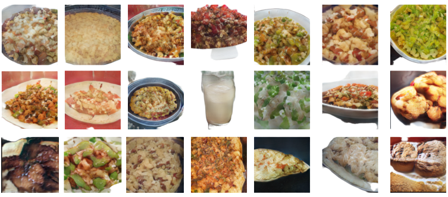
Figure 1. Realistic generated food images
Team
- Hanyuan Xiao
- Kaijie Cai
- Heng Zhang
- Buke Ao
Motivation
Food image generation as one of image generation tasks is useful in visualization for almost everyone. Given food ingredients and cooking methods (e.g. bake, grill), people may wonder name and image of the dish that can be cooked. For example, chefs may want to try so many new ingredients and cooking method to invent new menu. Parents may be worried about whether dinner will be attractive to their children and consider nutrients at the same time. Based on the same ingredients, can we make something new and interesting? Even students who have a deadline may want to spend the minimum time to cook their lunch or dinner with whatever in the fridge. Therefore, such an image generator can provide a high-level idea about what they can cook.
Besides sparks and interest that can be brought to the public in this project, outputs of our model can also be used to evaluate and quantify vital criteria of food with attention drawn by Computational food analysis (CFA) [1] such as meal preference forecasting, and computational meal preparation. Therefore, the model defines its importance and usage in real life and is crucial to human life. Existing approaches such as The Art of Food does not take cooking method as input. However, the importance has been overshadowed since the same ingredients can be made into different dishes. For instance, chicken and noodles can be made in ramen or fried noodles by boiling and stir-fry, respectively. Therefore, this project aims at developing a reliable method to generate food image that fits in any specific class.
Problem Statement
Related Works & Method
Objects in images have many attributes that represent their visual information. On the other hand, the attributes could be described by texts either. Hence, if the connection between images and texts is learned, then we are able to generate images with text as input. Furthermore, the problem could be solved by two steps.
- The first is to learn the text feature representations that are related to the key visual details.
- The second is to generate images from the text feature representations where the visual attributes are the same to word descriptions.
The connection between the image pixel and the text description is highly multimodal, there are many possible mapping relationships between them. This multimodal learning is hard but finding the shared representation across different modalities is essential, besides, the generalization to unseen data is also a basic problem.
One way to generate images from texts is implemented by encoding the texts into class labels, which may cause loss of information and inaccuracy because the class labels are not good representations of original texts and there can be a large number of classes due to diverse combination of texts that the model cannot handle. Instead of directly using class labels, [2] proposed an end-to-end architecture to generate images from text encodings by RNN and GAN, but the associations between texts and images as well as loss functions are not well established. In this project, we use two stages – an association model and a generative model – to address this problem.
To address this problem, we use a recipe association model which is able to find the common representations (i.e. text embeddings) between images and text input, and then a GAN to generate images from the embeddings.
Cross-modal Association Model [3]
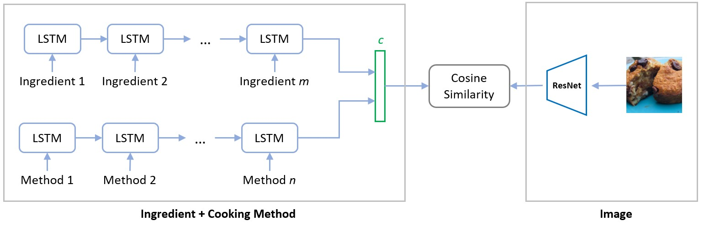
Figure 2. Association model from ingredient + method and images
The loss function of association model is:
where is positive pair between text embeddings and extracted image features. , are negative paris.  is the bias to train the model on pairs that are not correctly associated, which is set to 0.3 for cross-validation.
is the bias to train the model on pairs that are not correctly associated, which is set to 0.3 for cross-validation.
This network takes ingredients and cooking methods as input from one side, and uses images as input from another side as shown in Figure 2. The ingredients and cooking methods are encoded by LSTM and concatenated together to get the representative text embedding. The feature extraction from images is achieved by ResNet [4] and then tuned based on our dataset and task. Finally, cosine similarity is used to compute similarity between image features and text embedding. Ideally, for positive pairs of image and corresponding text embedding, the similarity is as large as 1; for negative pairs, the similarity is smaller than a marginal value based on task and dataset.
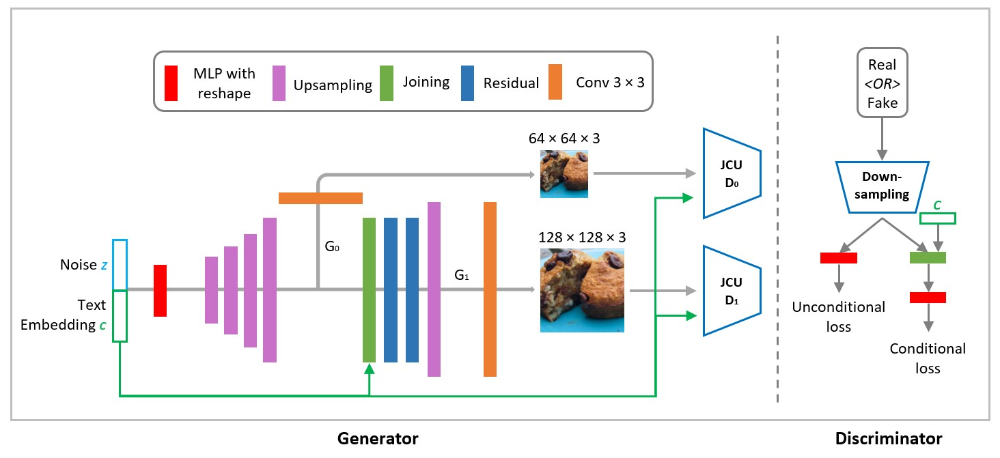
Figure 3. StackGAN for image generation
After we extracted meaningful and respresentative text embedding from ingredients and cooking methods by trained network in the association model. The text embedding for each training case is then used as the conditional code in StackGAN. In order to ascertain the food image has the expected ingredients and methods that it depends on, we added cycle-consistency constraint [1] to guarantee the similarity between generated fake images and text embedding strong.
The loss function in [1] for image generation used in conditional GAN is:
In the equation, we exploited both conditioned and unconditioned loss for discriminator. The loss of cycle-consistency constraint is incorporated as the term. The last part is the regularization factor, which aims at ensuring the distribution of conditions given extracted image features to approximate the standard Gaussian distribution as closed as possible. Loss weight hyperparameters are determined by cross-validation.
Experiment
We conduct our experiments using data from Recipe1M [[6]](#references). Recipe1M dataset consists of more than 1 million food images with corresponding ingredients and instructions. We manually extracted and chose 12 different types of cooking methods that are believed to be meaningful and distinguishable statistically, and then generated cooking methods for each training data by searching for keywords in the instruction text. We also reduced the number of different ingredients from around 18,000 to around 2,000 by removing ingredients with low frequency ( < 500 occurrence in the dataset) and then combined ingredients that belong to the same kind contextually (e.g. different kinds of oil which have the same features in images) or trivially (e.g. 1% milk and 2% milk). Because of the limit of time and computing resources we used only 10,000 data from the dataset to train.
We feed association model with paired and unpaired 128 × 128 image and text input. For the StackGAN model, we feed text embedding as conditions and random noise to generator. For discriminator, we feed both 64 × 64 and 128 × 128 images from our dataset and from generator. The real images can be paired with their crossponding text or random text.
Evaluation
We evaluated our task and approach via qualitative and quantitative results. In qualitative part, we demonstrate that our results are valid and meaningful under different conditions. In quantitaive part, we show two tables to compare the performance of our model with prior work.
Besides Figure 1 where we show several realistic generated images from our model, here we compare the influence of two inputs -- ingredient and cooking method -- on image generation.
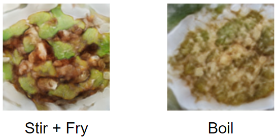
Figure 4. Fixed ingredients (pork chops, green pepper and butter) and change cooking method
In Figure 4, ingredients are fixed as pork chops, green pepper and butter, but cooking method is changed from stir+fry to boil.
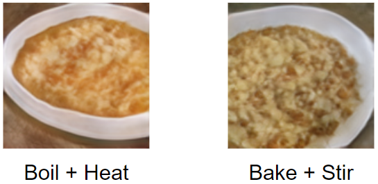
Figure 5. Fixed ingredients (cheese, egg and pizza sauce) and change cooking method
In Figure 5, ingredients are fixed as cheese, egg and pizza sauce, but cooking method is changed from boil+heat to bake+stir.
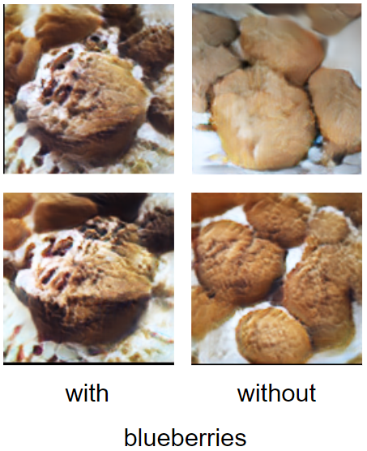
Figure 6. Fixed cooking method and add blueberry
In Figure 6, cooking method are fixed as bake as for muffin, but blueberry is added as extra ingredient. Blueberry is added to the top and inside muffin and we can see such dip in muffin with blueberries.
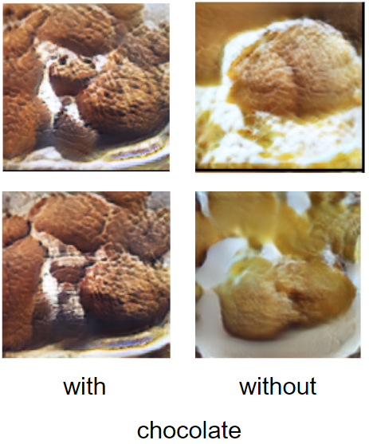
Figure 7. Fixed cooking method and add chocolate
In Figure 7, cooking method are fixed as bake as for muffin, but chocolate is added as extra ingredient. Chocolate is mixed with flour to prepare base for muffin and we can see muffin with chocolate in a darker color which represents chocolate.
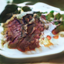
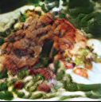
Figure 8. Generated images of pork with different noise
In Figure 8, we show generated images of pork with different noise input.
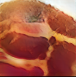
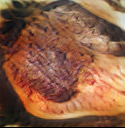
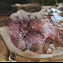
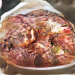
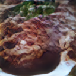
Figure 9. Generated images of pork with different cooking methods
In Figure 12, we show generated images of pork with different cooking methods.
To evaluate the association model, we adopt median retrieval rank (MedR) and recall at top K (R@K) as in [1]. In a subset of recipe-image pairs randomly selected from test set, every recipe is viewed as a query to retrieve its corresponding image by ranking their cosine similarity in common space, namely recipe2im retrieval. MedR calculates the median rank position of correct image, while R@K measures the percentage of all queries when true image ranks top-K. Therefore, a lower MedR and a higher R@K implies better performance. To evaluate the stability of retrieval, we set subset size as 1K, 5K, and 10K respectively. We repeat experiments 10 times for each subset size and report the mean results. Im2recipe retrieval is evaluated likewise. In Table 1, we show the discussed quantities. Our model outperforms in all scores, which proves that canonical, clear ingredients and addition of cooking method as input are important to the task.
| im2rcp | rcp2im | ||||||||
|---|---|---|---|---|---|---|---|---|---|
| MedR↓ | R@1↑ | R@5↑ | R@10↑ | MedR↓ | R@1↑ | R@5↑ | R@10↑ | ||
| 1K | Model in [1] | 5.500 | 0.234 | 0.503 | 0.618 | 5.750 | 0.230 | 0.491 | 0.615 |
| Ours | 4.400 | 0.261 | 0.549 | 0.679 | 4.200 | 0.270 | 0.556 | 0.682 | |
| 5K | Model in [1] | 24.000 | 0.099 | 0.265 | 0.364 | 25.100 | 0.097 | 0.259 | 0.357 |
| Ours | 17.900 | 0.116 | 0.299 | 0.406 | 16.700 | 0.129 | 0.315 | 0.421 | |
| 10K | Model in [1] | 47.000 | 0.065 | 0.185 | 0.267 | 48.300 | 0.061 | 0.178 | 0.261 |
| Ours | 34.900 | 0.077 | 0.212 | 0.301 | 32.700 | 0.088 | 0.229 | 0.319 | |
Table 1. Quantitative Evaluation for Cross-modal Association Model
We used inception score (IS) and Fréchet Inception Distance (FID) to evaluate results of GAN, where IS is computed for batch of images while FID is computed to compare difference between real image set and fake image set. The higher IS and lower FID are, the better quality and diversity are for our generated images. In Table 2, the comparison is based on same model structure, parameters, training and test cases and approximately the same IS for real image sets. The only difference is the input type. The image-input model has only noise as input for generator. The ingredient-input model has noise and ingredient text embedding as input for generator. The ingredient+method model has noise, ingredient text embedding and cooking method text embedding as input.
| Inception Score (IS)↑ | Fréchet Inception Distance (FID)↓ | |
|---|---|---|
| Image Input Model | 3.43041 | 34.31625 |
| Ingredient Input Model | 3.51826 | 32.65582 |
| Ingredient+Method Model | 3.53567 | 25.90622 |
Table 2. Quantitative Evaluation for GAN
Based on Table 2, we successfully proved that cooking method, as an extra input, is a useful and valuable input for food image generation task.
Future Improvements
From the experiments, we find that there are some improvements can be made in the future.
- Reduce the number of ingredients further. For example, we may combine different kinds of cheeses as they have similar appearance and contribution to the generated images. Such change will reduce the redundancy in the dataset and make it easier to learn.
- Balance the number of images with different color to prevent the model from the inclination to generate reddish and yellowish images or train with appropriate amount of epochs rather than more the better. See Figure 10 for a batch of generated images with epochs. For example, the third image on the first row. Green color is almost lost near the end of training. This is because, after some point, the model is inclined to minimize the overall loss by outputing an image that fits most data (in our case, is yellow or red food images) in training dataset.
- Extend training from 10,000 data to whole dataset. This is limited during development since time and computing resources are not allowed at this time.
- Improve model architecture and parameters.
- Investigate the way to better control the contribution of conditional inputs as we found that it sometimes generated irrelevant images. Attention mechanism and regularization loss can be the options.

Figure 10. A batch of generated images
FYI, we upload the loss curve to compare different inputs. We welcome any insightful suggestions on improving the performance. See Figure 11 for all loss curves in 150 epochs in our training. See Figure 12 for loss curve of ingredient+method model for 520 epochs that we trained in total.
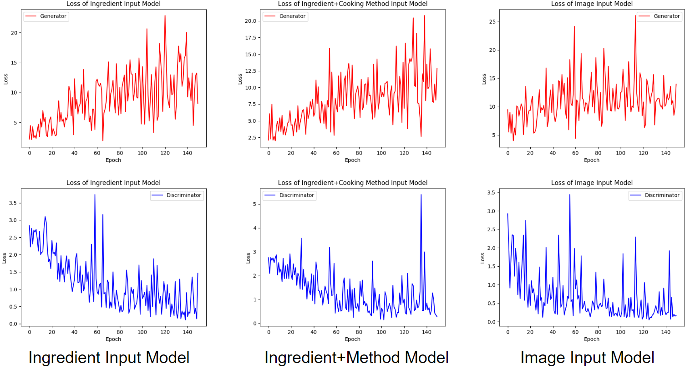
Figure 11. Loss curves of models with different inputs
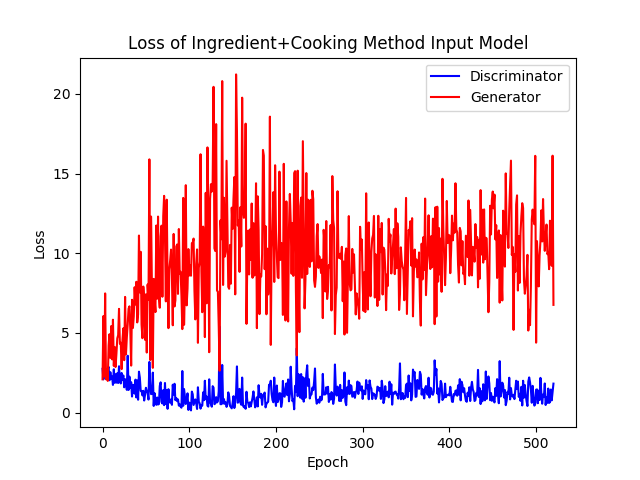
Figure 12. Loss curve of model with ingredient+method as input in 520 epochs
Contributions
We acknowledge the assistance and advice from professor Joseph Lim and wonderful TAs of course CS-566 (Deep Learning and its Applications). With their guidance, we developed the project and made the following contributions.
- A conditional GAN model for food image generation task with ingredients and cooking methods as input
- A refined version of dataset Recipe1M which further contains cooking methods extracted from instructions
- Quantitative data that proves cooking method as a useful and valuable input to food image generation tasks
References
- Fangda Han, Ricardo Guerrero, & Vladimir Pavlovic. (2019). The Art of Food: Meal Image Synthesis from Ingredients.
- Reed, Scott, et al. (2016). Generative adversarial text to image synthesis. arXiv preprint arXiv:1605.05396.
- Scott Reed, Zeynep Akata, Xinchen Yan, Lajanugen Logeswaran, Bernt Schiele, & Honglak Lee. (2016). Generative Adversarial Text to Image Synthesis.
- Kaiming He, Xiangyu Zhang, & Shaoqing Ren. (2015). Deep Residual Learning for Image Recognition. arXiv preprint arXiv:1512.03385.
- Han Zhang, Tao Xu, Hongsheng Li, Shaoting Zhang, Xiaogang Wang, Xiaolei Huang, & Dimitris Metaxas. (2016). StackGAN: Text to Photo-realistic Image Synthesis with Stacked Generative Adversarial Networks.
- Marin, J., Biswas, A., Ofli, F., Hynes, N., Salvador, A., Aytar, Y., Weber, I., & Torralba, A. (2019). Recipe1M+: A Dataset for Learning Cross-Modal Embeddings for Cooking Recipes and Food Images IEEE Trans. Pattern Anal. Mach. Intell..
Grand Opening of The Rensselear Augmented and Virtual Environment lab (RAVE)
Introduction
This is a brand new lab of Professor Radke in RPI. Different from pervious labs, it focuses on application and allows students and staff to enjoy visualization of new technology. Multiple sets of VR/AR systems and capacious open space allow people to feel vivid virtual world immersively. Students and scholars will also do researches in VR/AR area which is believed as a main future trend. We believe the lab will have fruitful outcomes and lead the way of RPI research in this area.
Links
3D-Stitching
People
- Hanyuan Xiao
- Ziyu Liu
- Prof. Rich Radke, ECSE (Advisor)
Abstract
In this paper we describe a method to solve a particular issue within the pipeline of 3D reconstruction of large-scale scenes. Due to the linear growing rate of processing time of each image with the number of images in data set, it is recommended to reconstruct from smaller subsets of data which are known to belong to a same object. Therefore, an automatic method to joint and merge two adjacent models is necessary to reduce the pipeline time complexity considerably. The input data in our test cases are 3D OBJ files. The method can be easily extended to other 3D model file types. Textures from original models are also recomputed to map to corresponding merged meshes. In the paper, we assume users can specify the direction in which two models are jointed and can move the surfaces to be merged to appropriate positions closed to ground truth. Output is exported in 3D OBJ type.
Links
VR Acquisition & Application
People
- Hanyuan Xiao
- Prof. Rich Radke, ECSE (Advisor)
Abstract
This research investigates Photogrammetry technology for 3D model construction, as part of the new virtual and augmented reality lab for the School of Engineering. We are conducting research in method to raise the quality of Photogrammetry-generated 3D environments to make them as believable as possible, using large image data sets. We are also identifying common issues to develop best-practices guidelines for image acquisition in both indoor and outdoor environments, using combinations of off-the-shelf tools. One of our hypothesis is quality of work Photogrammetry generates can become reality-like if the size of image-data set is approaching to infinity. The main methodology is gathering documentation from various professionals in all steps of pipeline and then analyze, select and implement in our own data set. So far, we have successfully captured several scenes from around the JEC and published them in the Steam workshop so that anyone with a VR headset can virtually experience these environments. Currently, we have started to analyzing and solving issues such as creating non-planar ground surfaces to allow virtual objects to realistically interact with the generated environments.
Poster

Results
Links
{kind=link}
Team
- Hanyuan Xiao
- Shoshana Malfatto
- Yanjun Li
- Ziniu Yu
- Ziyang Ji
- Xiuqi Li
- Junhao Xu
- Carlos Power
- Prof. Mukkai S. Krishnamoorthy, CSCI (Advisor)
Abstract
In this research, we investigated method to implement VR/AR on website and created 360 environment with basic hardware available. In order to achieve our final goal to establish a project with both front-end and back-end which supports everyone from the world to visit our environment, we set up three milestones during development. Within the development of the first one, we utilized 360 camera, Google Cardboard headset and other supported hardwares and found the optimal way to collect data from reality. Next, we studied the structure and usage of APIs of Aframe-in which is equipped with algorithm to bring common type of 360 videos, photos or environment onto website. To visualize our research, we wrote a program which provides users with free trip into RPI west campus. Users are enabled to select local destinations on campus or select direction to go inside 360 environments. In the last milestone, we further extended the program from the second milestone that can now navigate users into RPI campus with classical shortest-path algorithm and image data set collected.
Descriptions
One of the goals in this research is to find an optimal way for public users to establish their own VR environments and contribute to the data set worldwide such as Google Street View in VR mode. Therefore, we tested devices with the most basic functions and features available in acceptable prices in the market so far. In order to capture 360 environment, we chose to compared Samsung Gear 360, set of GoPro 4 (8 in count) and common RGB cameras. In order to select a portable tool to view VR environment, we researched and tested Google Cardboard headset. To visualize our results and make a demo, we used equipment from our selections to record a short video through west campus of RPI and published onto YouTube so that anyone with VR headset can view the video. Video can be found here. Further results and links can be found in Result section below.
Our team is divided into three groups to work with front-end, back-end and data collection.
- Front end: Group worked with Aframe APIs and website to enable the visualization of 360 environment.
- Back end1: Group worked with AWS since we did not have local server and server provided by school has limited size of storage.
- Data Collection: Group used devices selected in the first milestone to take photos around the west campus of RPI with utilization of Google Street View APIs.
Again, our team is divided into three groups to work with front-end, back-end and data collection. In the third milestone, we added a new feature to our program which can be used as an on-campus VR map now. We integrated classical shortest path algorithm in the front end with Google Maps APIs. Arrows to show direction inside map are calculated in real time after algorithm finds the fastest route. In data collection, we further extended our data set so more local destinations are available now. Results and links can be found in Result section below.
Selected Challenges1
-
After we set up camera and tripod on ground, it is difficult for photographers to hide within the range of controlling at some places.
Solution: We recommend photographer to choose a large or high tripod that allows person to crouch underneath. Google Street View is also widely supported by 360 cameras such as Samsung Gear 360. Therefore, as photographer’s smartphone is online and camera is connected by Wi-Fi or Bluetooth to access network, photographer can hide at place far away and control.
-
It is challenging to locate in virtual 3D coordinates when we edited our environments in Aframe. Also, it took time to align the orientation of buttons in 3D scene with the image or word on button so that user can see wherever he/she is and whichever direction he/she is facing.
Solution: Instead of aligning pictures, we aligned all environments in orientations as they are in reality. In further data collection, we recommend photographers also set up camera to a single direction and record the exact location where the image is taken.
Results
We chose to use Samsung Gear 360 to take pictures at this time. GoPro is not suitable for static outdoor scene. If larger budget is provided or new technology is released, we would recommend the camera with higher resolution (at least 8K) and well-behaved performance in image quality. A tripod is also highly recommended. Drone or remotely controlled car is not required but can make picture capturing be easier if used.
The program is successful as we set up the demo in our presentation at RCOS2. The free trip program can be found below.
The program is successful as we set up the demo in our presentation at RCOS2. The RPI VR Map program can be found below.
- RPI VR Map (need local server to run2)
Additional Files
- Presentation Recording (to be uploaded)
- There are absolutely other challenges during development of this project.
- Unfortunately, so far users need to set up local server on own computers to correctly load the program in browser.